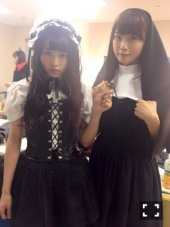
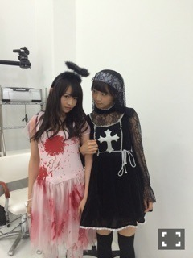
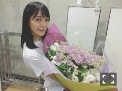

| 2016/06 18 Sat | 春紫苑。720回目 |
静岡エコパアリーナで行われた
2daysのライブを最後に
まいまいは乃木坂46を卒業しました。
本当にお疲れ様でした。
実感が湧かない！
もう一緒に歌えないのか
楽屋にいないのか
ちょっかい出せなくなるのか
とか考えてたら昨日も涙がー
どうしてくれる
気を遣わない家族みたいな人。
近くにいてくれて居心地がよかった。
くだらないことにくだらないこと返しで
全部応えてくれてありがとう。
たくさんの愛をありがとう。


泣いてるメンバーに
寄り添ってる姿を何度見てきたかな。
ごはん食べてないとすぐ心配するし、
チョコレート持ち歩いてるし
全然病気にならないし、
やると決めたことは絶対に曲げないし、
こんなアホに付き合ってくれるし、
とっても大人で、強くて美しい人。
まいまいのいる乃木坂46に入って
本当によかった！
まいまいが教えてくれたこと、
姿勢を忘れないようにします。
愛を与えられる人になりたい。
これからは深川麻衣をもっと自由に、
楽しんでね！我慢しないで、解放してね。

発売中のEX大衆のまいまい対談第三弾
読んだかな〜
よく珍しがられるけど
じゃれ合う仲は今に始まったことじゃない！
ことばに言い表すことは難しいけど、
私にとって、乃木坂にとって
本当に特別な存在だった。
話してる時、いつも
万理華は大丈夫って言ってくれる。
大丈夫になるようにがんばるよ〜

親愛なるまいまい！
卒業おめでとうございます。
これからもよろしくね
まりか
コメント(393)
2016/06/18 18:30